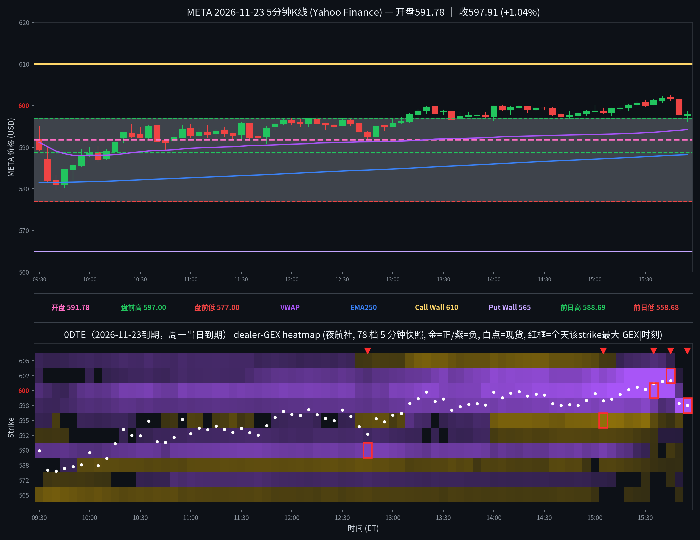

META 日内报告
2026年11月23日 · 周一 · 日内报告
早盘分析
（Junk-man 早盘简报未抓取到，留空待补）
（待补充 Junk-man 当日 #junkman-analysis 原文）
5 分钟 K 线＋0DTE dealer-GEX heatmap
0DTE（2026-11-23 到期，周一当日到期）dealer-GEX heatmap，78 档 5 分钟快照；墙位为 Junk-man 简报口径（本日缺席记 null），算法墙见正文。

heatmap解读（0DTE 2026-11-23 到期链，78 档）
0DTE（2026-11-23 到期）链 78 档 5 分钟快照齐全（09:30–15:55 ET）。总 gamma 全天为负、0 次翻号：开盘 -11.9M，10:00 -19.3M、10:30 -38.8M、11:30 -54.3M、12:30 -60.2M、13:30 -73.7M、14:30 -90.4M、15:30 -163.8M、15:40 -199.9M、15:45 -210.1M（日内最负），15:50 回至 -146.7M；15:55 帧仅剩 1 个 cell（0DTE 到期残值，-401.3M），不作收盘结构解读。King：610（+5.0M @09:30，兼 Call 墙）→ 587.5（+2.0M，11:30–12:30）→ 605（+4.6M @13:30）→ 595（+5.1M @14:30 → +9.1M @15:30）。正 gamma 全天都很薄：单点最大仅 +10.1M（595 @15:05）。同链对照不可做：上周五收盘帧属于已到期的 2026-11-20 链（现货 561.17、总 gamma +2.0M、King 560 +4.9M），与今日 2026-11-23 链不同链，仅作背景——今日首帧现货 589.92（较上周五收盘帧 +28.75），首帧算法墙 Call 610（+5.0M）/ Put 565（+2.9M）。
- 开盘 591.78（YHS 日线官方开盘；较上周五收 561.46 高开 +5.40%），盘前高 597.00 / 低 577.00，09:25 盘前价 591.15；盘前区间 20.00 点、占日波幅（22.68 点）的 88%——隔夜已走完大半波幅
- 首根 5m 收 589.33：开盘 591.78 在首帧算法墙（Call 610 / Put 565）之间，首根未触墙；09:35–09:40 两根急跌至日低 579.78（09:40 那根，在 09:45 PMI 公布之前），09:45 那根收在其高点 584.67 完成日内 V 形底，此后一路震荡上行
- 10:15 首根收上 590（收 591.18），10:35 首根收上 595（收 595.00），全天 48 根收盘在 595 及以上；15:20 首根收上 600（收 600.16），15:45 探日高 602.46（收 601.73），15:50 一根跌回 597.87（-3.86）、终根 15:55 收 597.91——全天仅 6 根收盘在 600 之上
- 600/602.5 负 gamma 簇随价格上行而加深：600 由 -5.3M @09:30 → -18.6M @10:30 → -36.9M @14:30 → -82.5M @15:30 → -89.5M @15:35；602.5 至 -125.8M @15:45（日高 602.46 同一时刻）；价格 15:50 跌回 597.87 后，负簇下移至 597.5（-138.6M @15:50），600/602.5 衰减至 -9.1M/~0——价格全天坐在负 gamma 里、未站上 600 企稳
- 收盘位置：597.91，VWAP 594.25 上方 3.66 点、EMA250 588.20 上方 9.71 点；日波幅 22.68 点（602.46–579.78）。总 gamma 日内在 -210.1M～-11.9M 之间、0 次翻号，全天为负；有意义的收盘帧是 15:50（20 个 cell，总 gamma -146.7M，King 595 +1.0M），15:55 帧仅剩 1 个 cell 为 0DTE 到期残值，不作收盘结构解读
全天最大节点 TOP5
全天 78 档快照内各 strike 的最大 |GEX|，与图表红框一致。注意：① 597.5 的 -401.3M（@15:55）是 15:55 帧单 cell 到期残值，不作结构解读；该 strike 有意义的极值是 -138.6M @15:50（15:50 帧，20 个 cell 齐全），仍为全天最大实盘 |GEX|，且紧贴收盘价 597.91（仅低 0.41 点）；② 602.5 的 -125.8M（@15:45）与 600 的 -89.5M（@15:35）是价格上摸 600 一带时形成的上方负 gamma 簇，价格 15:45 探日高 602.46 后 15:50 一根跌回 597.87，600/602.5 的负值随即衰减至 -9.1M/~0——负簇随价格回落而下移至 597.5；③ 590 的 -23.1M（@12:45）为开盘结构、随价格远离衰减至 ~0；④ 595 的 +10.1M（@15:05）是全天最大正 |GEX|，正 gamma 全天单点未超过 +10.1M，结构以负 gamma 为主。
资金流（口径 premium≥$20万｜size≥50｜DTE≤1｜side=at_ask/at_bid；mid单列、绝不计入主动买卖）
| 时间 | Strike | C/P | DTE | Fill | Bid/Ask | Side | Size | Prem | Vol | OI |
|---|---|---|---|---|---|---|---|---|---|---|
| 10:50:52 | 590.0 | CALL | 0 | $6.30 | 6.00 / 6.30 | ASK | 500 | $0.315M | 4823 | 439 |
| 10:51:16 | 590.0 | CALL | 0 | $5.60 | 5.60 / 5.95 | BID | 500 | $0.280M | 5329 | 439 |
| 10:54:00 | 590.0 | CALL | 0 | $6.05 | 5.60 / 6.05 | ASK | 500 | $0.302M | 5883 | 439 |
DTE≤1 口径下全天仅 3 笔大单，合计 $89.8万，全部集中在收盘前最后 4 分钟（10:50–10:54 ET）、同一合约 O:META261123C00590000、每笔均为 500 张：看多 2 笔 $61.8万（at_ask）对看空 1 笔 $28.0万（at_bid），净看多 $33.8万。三笔同 strike、同 size、4 分钟内连续出现，更像同一批头寸的分拆执行而非三笔独立判断，方向信号弱，不作方向判断。方向口径：看多=call ask＋put bid，看空=put ask＋call bid，mid 不计。
分析总结
价格行为 × 全天 GEX 结构复盘
① 开盘 591.78（YHS 日线官方开盘；较上周五收 561.46 高开 +30.32 / +5.40%），全天 579.78–602.46，收 597.91（+6.49% vs 上周五收；收开差 +6.13 / +1.04%）。盘前高 597.00 / 低 577.00，09:25 盘前价 591.15。事件日（9:45 S&P Global 11 月闪 PMI；lib.EVENT_DAYS 有本日条目）。上周五为月度 OPEX 大跌日（-5.83%），今日为其后的大幅反弹日。
② 白点轨迹（K 线）：09:30 首根收 589.33（开盘在首帧算法墙 610/565 之间、未触墙）→ 09:35–09:40 急跌至日低 579.78（09:40 那根，在 09:45 PMI 公布之前）→ 09:45 那根收在其高点 584.67 → 10:15 首根收上 590 → 10:35 首根收上 595 → 午后沿 595–600 一带横盘上行 → 15:20 首根收上 600（收 600.16）→ 15:45 探日高 602.46 → 15:50 一根跌回 597.87 → 终根 15:55 收 597.91（VWAP 594.25 上方 3.66、EMA250 588.20 上方 9.71）。
③ 结构（78 档全天）：首帧算法墙 Call 610（+5.0M，兼 King）/ Put 565（+2.9M）；价格全天未触及任一墙（日高 602.46 距 Call 墙 7.54 点、日低 579.78 距 Put 墙 14.78 点）。总 gamma 全天为负且一路加深（-11.9M → -210.1M @15:45，0 次翻号），正 gamma 单点最大仅 +10.1M（595 @15:05）；600/602.5 负簇随价格上行加深至 -89.5M/-125.8M，价格 15:50 跌回后负簇下移至 597.5（-138.6M @15:50）——价格全天坐在负 gamma 里，600 一带是加速带而非被站稳的支撑。
④ Junk-man 简报已核实缺席（见 junkman 字段）：按 2026-11-05 用户指令不再查 Discord，本地无用户当日粘贴/上传的简报文件，墙位记 null；首帧算法墙见上文，非简报墙。
⑤ 资金流：DTE≤1 口径下全天仅 3 笔大单（合计 $89.8万，全部为 0DTE C590、500 张、收盘前最后 4 分钟），看多 2 笔 $61.8万对看空 1 笔 $28.0万，净看多 $33.8万；三笔同合约、同 size、4 分钟内连续出现，更像同一批头寸的分拆执行，方向信号弱，不作方向判断。
K线=Yahoo Finance 5分钟；heatmap=夜航社 dealer-GEX 5分钟快照（0DTE 2026-11-23 到期链，78 档）。
收盘后的静态快照；页面不在打开时更新行情。Yahoo 官方收盘参考 regularMarketPrice 597.60，与 15:55 bar 收 597.91 差 0.31，报告口径沿用历日惯例取 15:55 bar 收盘价。